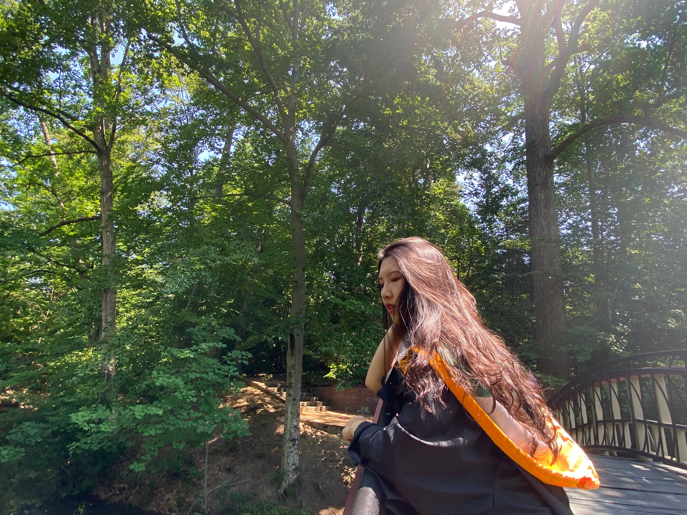
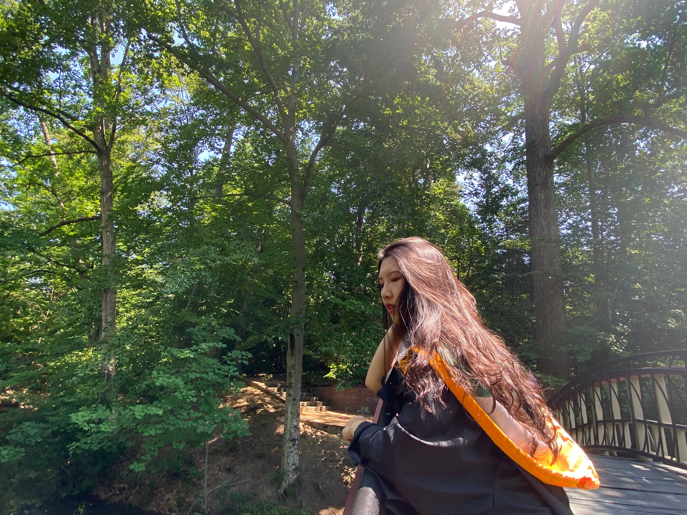
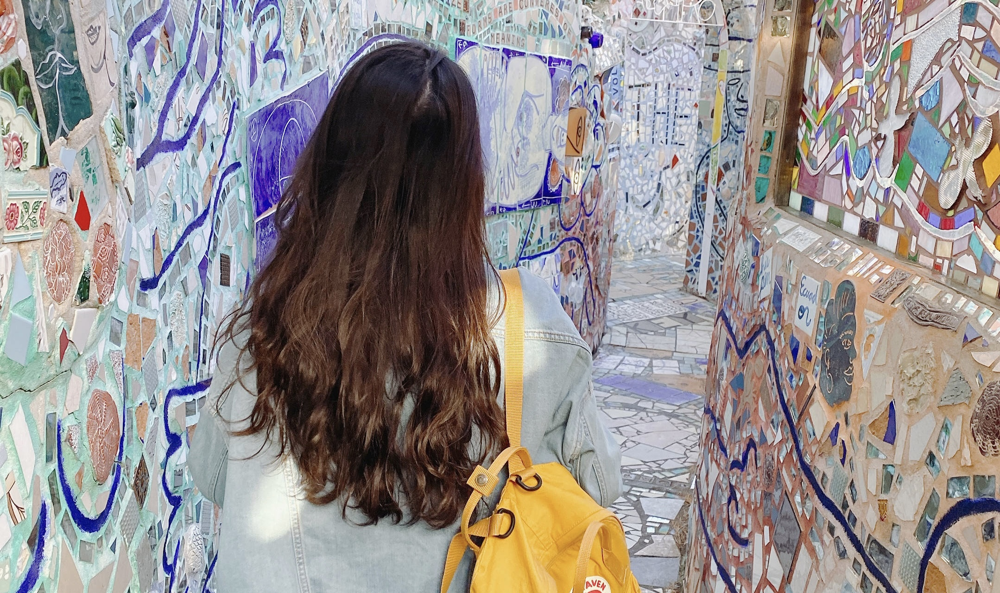
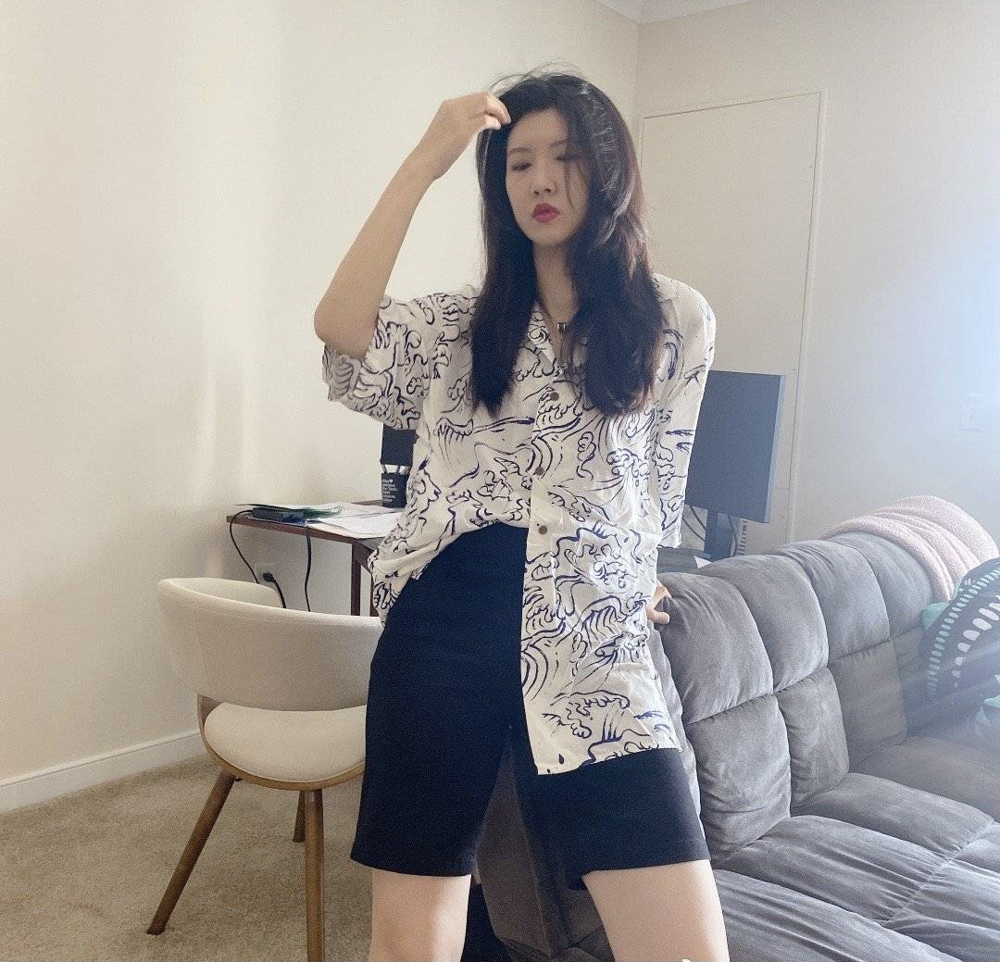
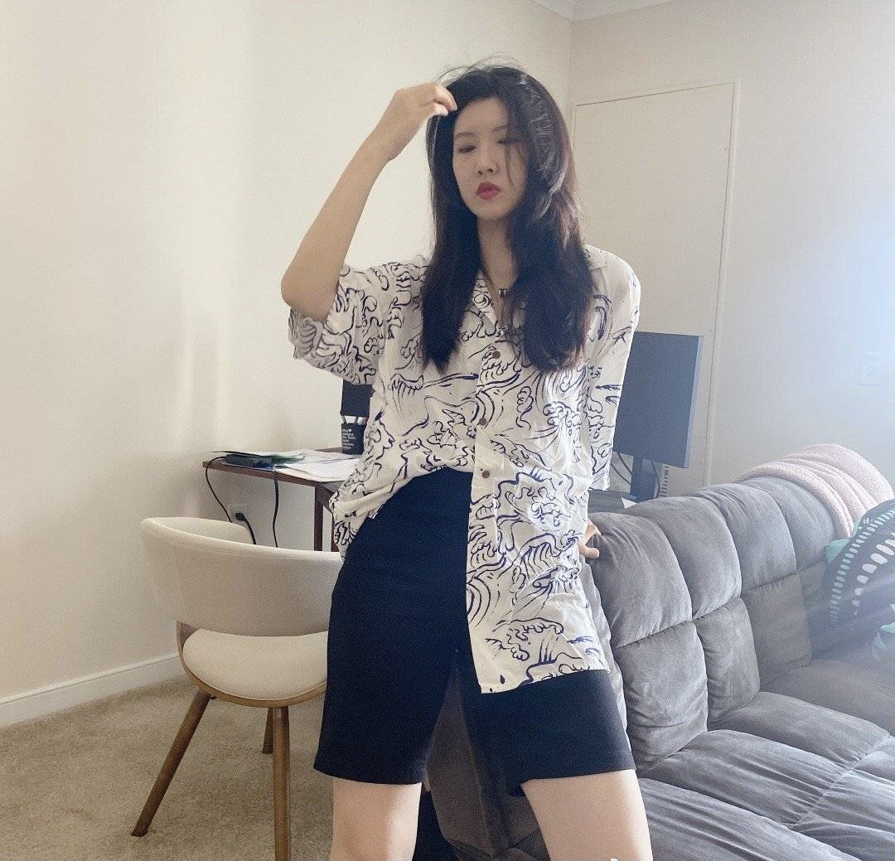
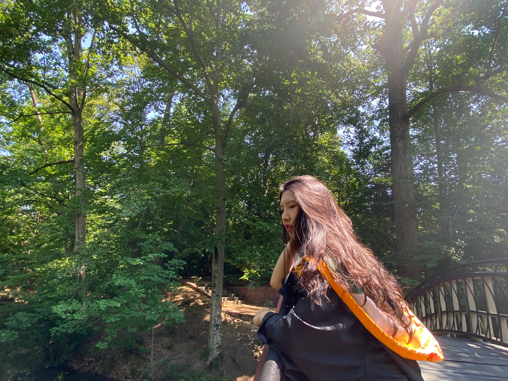
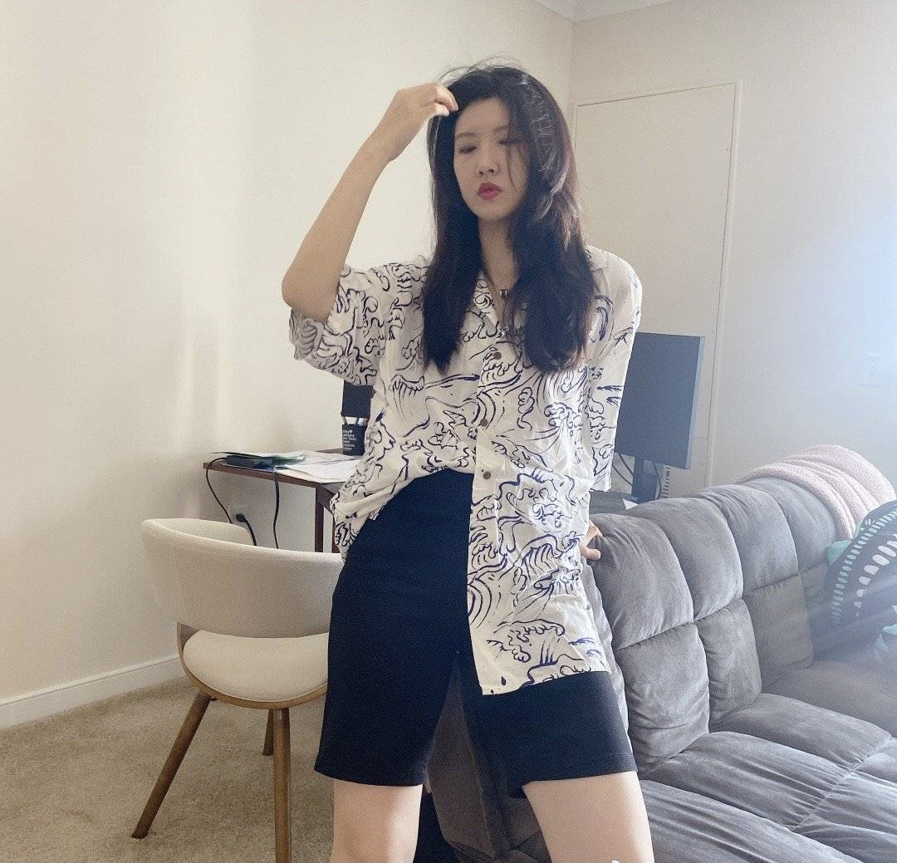

Happy Birthday Ruxin!
Explore your 2021 Journey with me.
.JPG) 


.JPG) 

Explore your 2021 Journey with me.


爱你的小盛
两个人在一起久了，会习惯性地用恋人的角度看待彼此，渐渐忘了当初朋友时期， 对方是如何吸引自己的。我得承认我自己也有这种时候。但每当不是我们两个独处的时候， 如昕总能让我重新认识到她的体贴，热心和可爱之处。我们与新朋友初次见面，大家都有点拘束， 但是如昕就很自在得挑起话题，主动开自己的玩笑消除边界感。拍照的时候也暂时忘记自己是个辣妹的事实， 是很搞怪可爱的pose，使得周围的人都不自觉地逐渐放松下来。与一群人出去玩，如昕总是主动承担责任的那个人，早早做好攻略，然 后和大家商量行程的时候站出来提供自己的意见。
闪闪发光的如昕
我们家有一台很笨重的老式显示屏，一直放在客厅鞋柜旁边。这台电脑是去年小盛和小李不小心 摔坏李思航留下的显示屏之后，小李在ODU群里一个老师那里拿到的。小盛用它暂时工作了一段 时间，有了新的电脑之后就闲置了。因为它又笨重难用又很有些年头，所以有一天小李提出要把 它还给老师的时候，小盛诧异了：这么个破玩意扔了算了。争执了两句，小李有点生气,很认真地 和小盛解释：这个电脑是很旧很难用了，如果是我们自己的话我们想怎么处置就怎么处置，但是 它是别人送给我们用的，我们就应该还给别人，因为可能别人还有用。小盛想了想理解了。小盛 很欣慰的是，大多数时候小盛和小李的道德感的交集是两人各自的全集。但是这种情况的出现， 让小李成为小盛的补集。此处给小李胸前带一朵小红花。
能不能不叫我的名字
“宝贝，说了多少次，你怎么又…” 这句话对于如昕来说应该不陌生，毕竟她每天要说不下三遍。 可能是台面上的水没擦干净，也可能是浴帘没有拉上，还有可能是穿睡觉的衣服坐了沙发。 这句话还有升级版：“盛中一！”此刻有一万种可能性在小盛脑海里回旋：可能是软软小熊没有及 时更换，又或许是食物渣渣又掉到了地毯上，不对，一定是千叮咛万嘱咐要留下的盒子被扔掉了。 如昕总有一万种方法让小盛感到害怕和想逃避。二十多年小盛的妈妈也没有纠正过来的坏毛病， 在如昕这里必须给纠正过来。谈恋爱以前如昕的爱干净有多可爱，同居以后约束到了自己身上就 有多可恶。冷静想想如昕确实是对的，但是就是想和她对着干。
2021年年初，小李和小盛达到了肥胖巅峰
这必然得益于每周某个不洗头的工作日晚上小李做的三盒曲奇（或者）饼干。我这么说可能对豉油皇炒面，
梅干菜肉饼，特辣新疆炒米粉，豪华版螺狮粉，如昕秘制豆皮，和几十个化成脂肪的蛋挞、红豆小酥不公平。


值得欣慰的是，在好姐妹体重不过百的刺激下以及偷偷变瘦的肚肚孜孜不倦的教诲中（当然主要还是因为某个强迫症患者，买了Apple Watch之后每天都要闭环）， 两个小胖子开始了减肥之旅。
刚开始的时候无疑是最辛苦的，因为变大的胃不能习惯减少的供给，小胖子的馋虫也无法被水煮西蓝花和芦笋满足。于是，每晚的吃播成了我们的精神食粮。 从韩式炸鸡火鸡面吃到红烧猪蹄，榴莲千层，看到等于吃到，小李在小盛的咯吱窝里升华了。
从四月初开始正式减肥到现在七月末，我们有过几周不掉称的瓶颈，也有过突然上称瘦三斤的欣喜。其实我想对小胖子说，很多时候我都想放弃了，好在还有你。
也希望小胖子哦不，现在是辣妹能够知道，无论有什么困难，另一个小胖子都会和你一起面对，陪你一起度过。